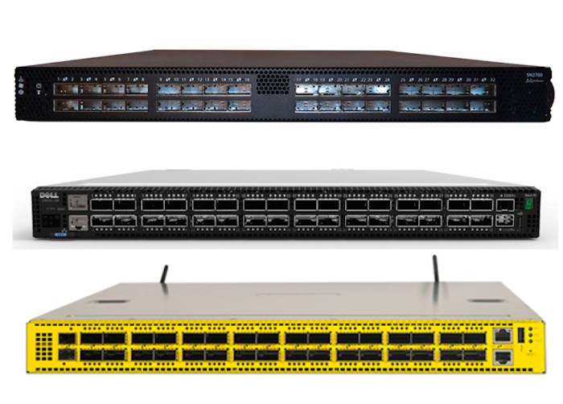

<div class="row">
  <div class="col-md-8 col-md-offset-2">
    <h2>Presentations</h2>

    <div class="panel panel-default">
      <div class="panel-heading">
        <h3 class="panel-title">Installing and Configuring Linux on White Box Switches <small>Triangle Linux Users Group 2016</small></h3>
      </div>
      <div class="panel-body">

        <div class="media">
          <div class="media-left">
            <a href="white-box-linux">
              
            </a>
          </div>
          <div class="media-body">
            <a href="white-box-linux">In this presentation</a>, I introduce White Box Switches
            and how they fit into the Linux ecosystem that currently dominates servers.
            In our demo, we will install Cumulus Linux on a virtual White Box Switch running 
            ONIE. Source code and a Youtube video of the demo are available.
            <ul>
              <li>Using <a href="http://vagrantup.com">Vagrant</a> to simulate bare metal white box switches</li>
              <li>Introducing <a href="http://onie.org">ONIE</a> and <a href="http://cumulusnetworks.com">Cumulus Linux</a></li>
              <li>Simulating an unattended installation over the network</li>
            </ul>
          </div>
        </div>

      </div>
    </div>


    <div class="panel panel-default">
      <div class="panel-heading">
        <h3 class="panel-title">Virtualization and the Agile Datacenter <small>SouthEast LinuxFest 2016</small></h3>
      </div>
      <div class="panel-body">

        <div class="media">
          <div class="media-left">
            <a href="agile-datacenter">
              
            </a>
          </div>
          <div class="media-body">
            <a href="agile-datacenter">In this presentation</a>, I demonstrate how to use Vagrant to deploy
            a virtual data center to do rapid prototyping and failure scenario
            testing. Source code and a Youtube video of the demo are available.
            <ul>
              <li>Using <a href="http://vagrantup.com">Vagrant</a> to spin up a virtual toplogy</li>
              <li>Deploying an Ansible playbook on a virtual topology</li>
              <li>Simulating a network failure and recovery scenario</li>
              <li>Adding new devices to the network and validating the configuration</li>
            </ul>
          </div>
        </div>

      </div>
    </div>


  </div>
</div>
